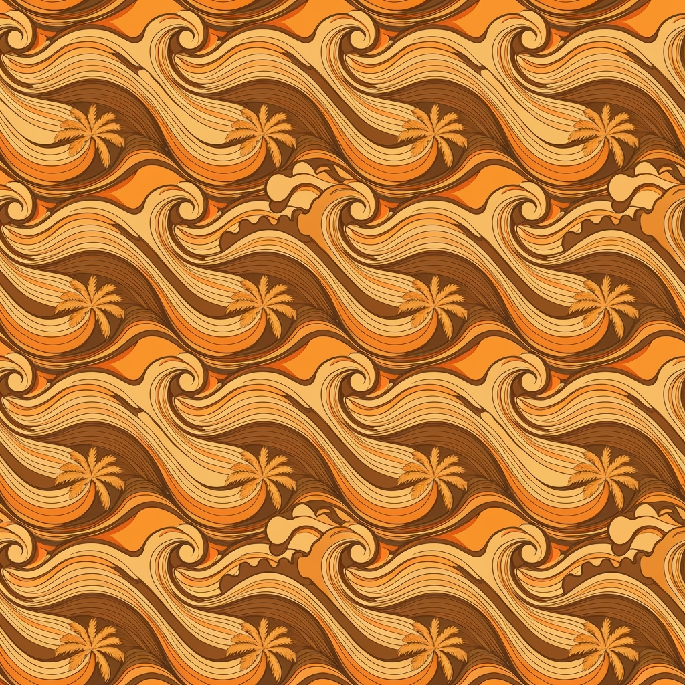
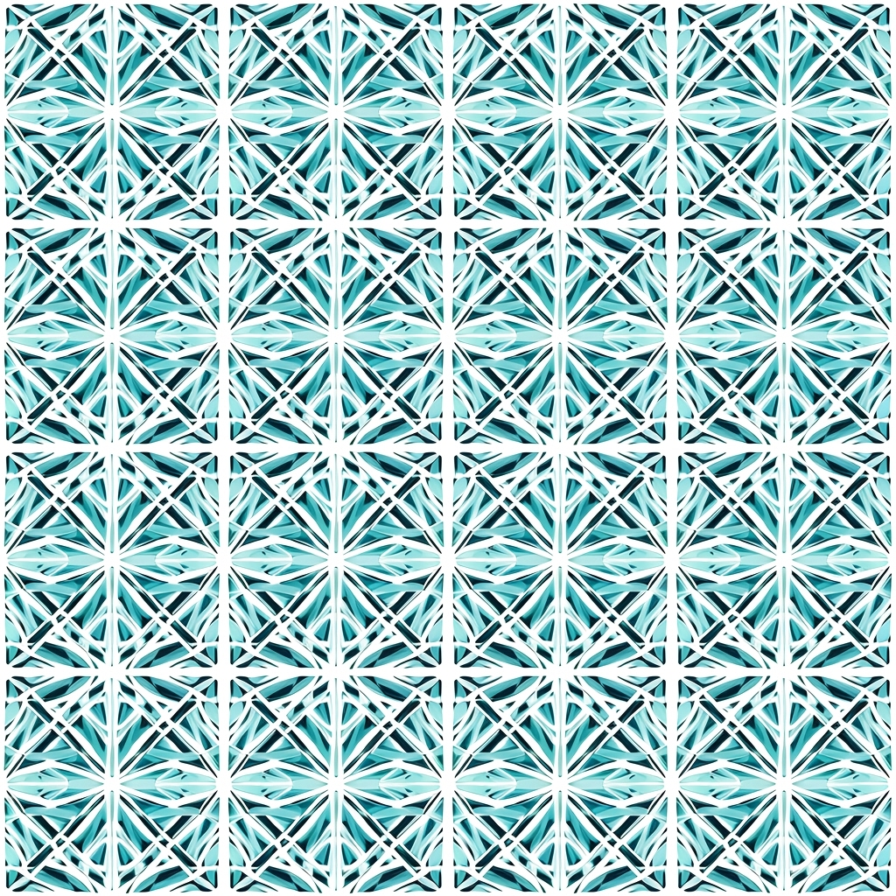

エコ・パームクール
プロフェッショナル ファッションカタログ
2026春夏コレクション

エコパーム・リーフ
持続可能なスタイルでデザインされたパームリーフとトロピカルフロンドの シームレスなリピートパターン。オーガニックで自然な質感を持つボタニカルイラストレーションスタイル。
技術仕様
リピートタイプ:
ハーフドロップ
スケール:
ラージ
用途:
テキスタイル・ボタニカル・エコ
カラーパレット
#2D5D2F
#7FB069
#A8D5A8
#F4F9F4
#E8F5E8

クールウィンド・ストライプ
パームシャドウ効果を持つクーリングウィンドストライプのシームレスリピートパターン。穏やかな風を示唆する流れるような線形要素とモダンミニマリストアプローチ。
技術仕様
リピートタイプ:
ストレート
スケール:
ミディアム
用途:
テキスタイル・リニア・クーリング
カラーパレット
#4A90A4
#87CEEB
#B8E6B8
#F0F8F0
#FFFFFF

サステナブル・ドット
パームシードと自然な形からインスピレーションを得たオーガニックな円形ドットのシームレスリピートパターン。エコ意識のあるスペーシングとバイオフィリックデザイン要素。
技術仕様
リピートタイプ:
ブリック
スケール:
スモール
用途:
テキスタイル・ジオメトリック・オーガニック
カラーパレット
#6B8E23
#9ACD32
#F5F5DC
#FFFAF0
#E6E6FA

トロピカル・ウェーブ
パームツリーシルエットを持つ流れるようなウェーブパターンのシームレスリピートデザイン。海風とトロピカルな雰囲気を示唆する波形と流体的なオーガニックシェイプ。
技術仕様
リピートタイプ:
ハーフドロップ
スケール:
ラージ
用途:
テキスタイル・フローイング・トロピカル
カラーパレット
#008B8B
#20B2AA
#AFEEEE
#F0FFFF
#E0FFFF

エアリー・メッシュ
パームファイバーからインスピレーションを得たエアリーメッシュ構造のシームレスリピートパターン。冷却換気を示唆する通気性のある幾何学的グリッドパターンと持続可能なテキスタイルコンセプト。
技術仕様
リピートタイプ:
ストレート
スケール:
ミディアム
用途:
テキスタイル・ジオメトリック・エアリー
カラーパレット
#778899
#B0C4DE
#E6F3FF
#F8F8FF
#FFFFFF
デザインノート
シーズンフォーカス
2026春夏の軽やかさと涼しさを重視
エコエレメント
持続可能性とパームモチーフの融合
クーリングファクター
視覚的涼感効果を全パターンに組み込み
リピートテクノロジー
シームレス・リピート技術により製造効率を最適化